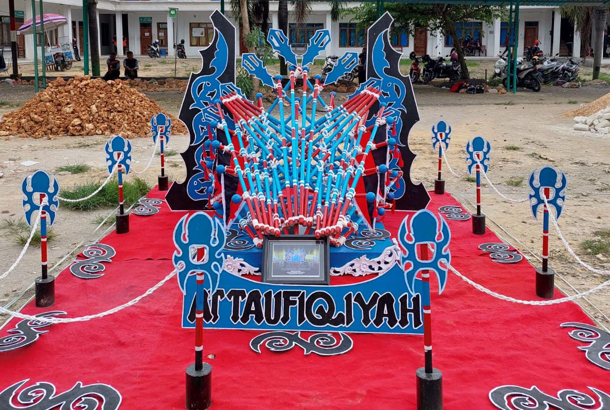

sejarah
attaufiqiyah di dirikan padsa tahun 1942 yang didirikan oleh K.H Hasyim ali
Pondok pesantren attaufiqiyah
santri mewarnai bukan di warnai
tingkat sekolah
PAUD,MI,MTS,MA,SMK
Pondok pesantren attaufiqiyah tempat menimbah ilmu dan lengkap juga tingkat sekolahnya dari PAUD,MI,MTS,MA,SMK

SMK
sekolah yang memiliki tujuan untuk mendidik dan melatih siswa agar menjadi lulusan yang siap terjun ke dunia kerja

PONDOK
tempat tinggal bersama atau (asrama) para santri yang merupakan ciri khas pondok pesantren yang membedakan dari model pendidikan lainya

lingkungan
Lingkungan luas di pondok sudah termasuk dengan lapangan utama yang di lengkapi dengan gawang sepak bola, ring batminton dan basket